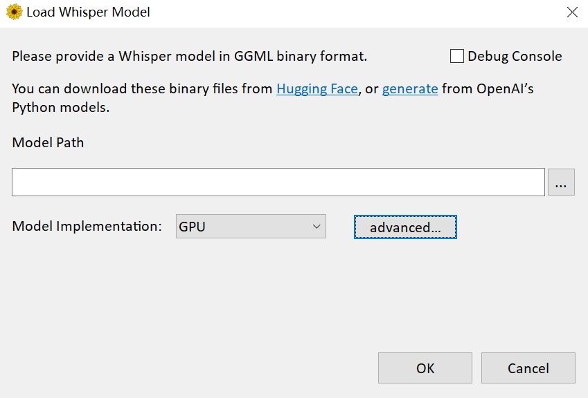
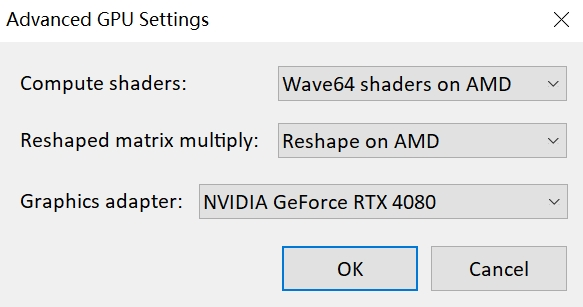
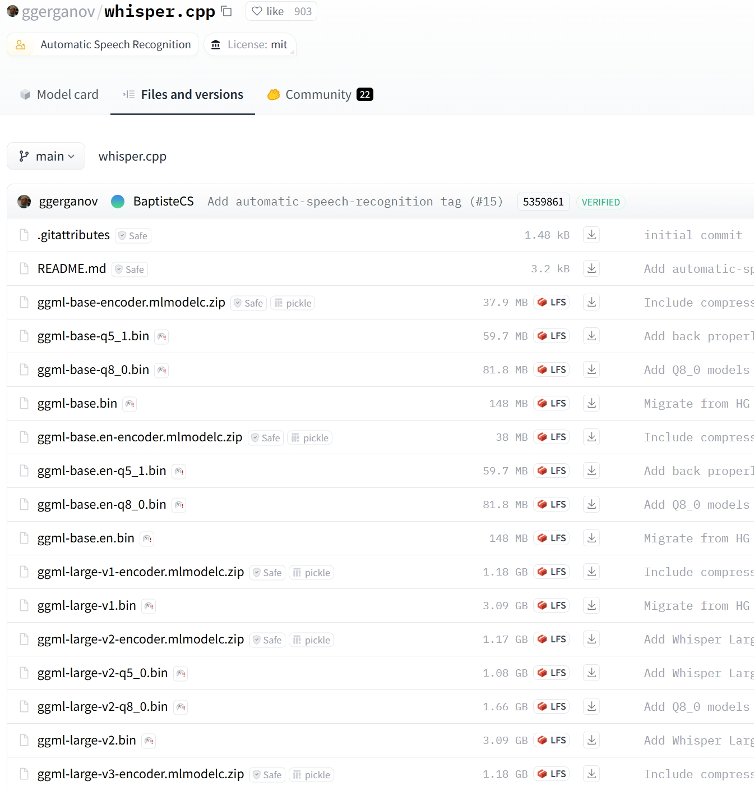
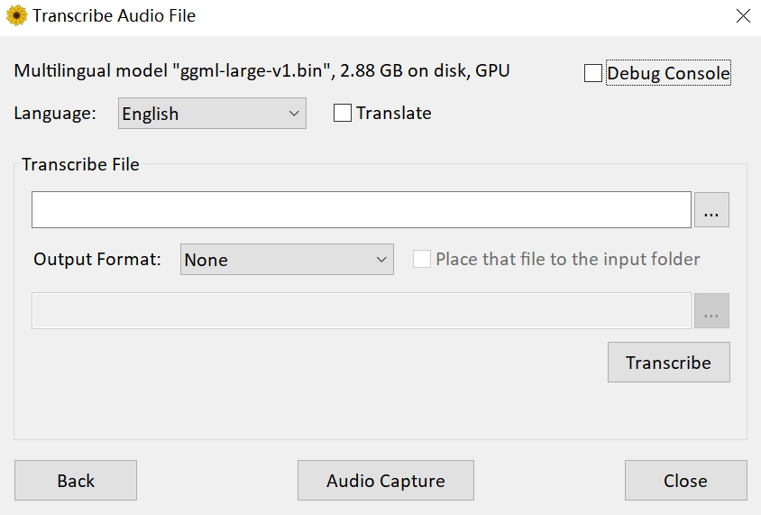
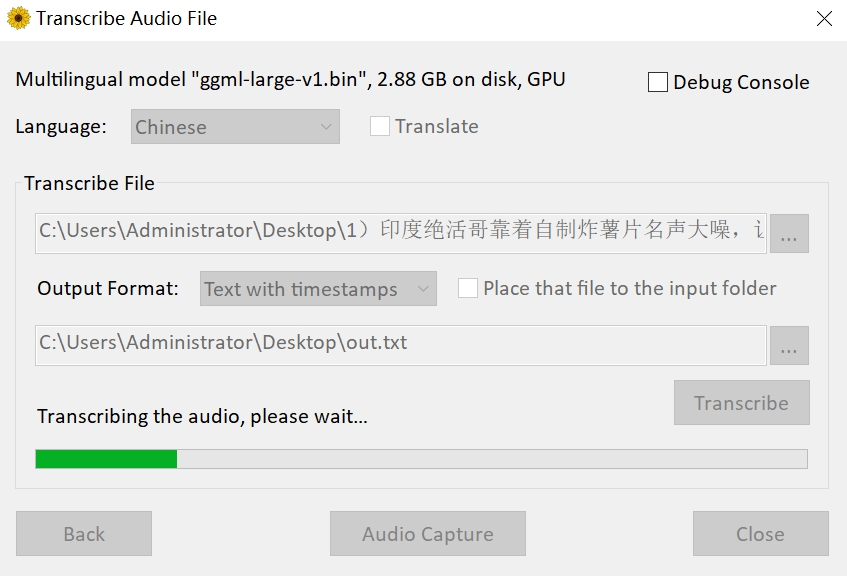

本篇文章来分享一下如何提取音视频中的文本。
第一步：
打开 https://github.com/Const-me/Whisper/releases/tag/1.8.1 点击下载 WhisperDesktop.zip，解压之后会得到一个 exe 文件和一个 dll 文件。我们点击 WhisperDesktop.txt，界面如下。

Model Path 表示模型的路径，如果想实现文本提取，那么需要有专门的模型。然后是 Model Implemention，直接选择默认的 GPU 即可，所以如果你有一个好的 GPU，那么训练速度会更快。
接着是 advanced，即高级选项，我们点击它。

里面的 Graphics adapter，选择你的显卡，我这里的 RTX 4080。
第二步：
下载模型，打开链接 https://huggingface.co/ggerganov/whisper.cpp/tree/main 下载指定的模型。

里面的模型种类非常多，模型越大，那么识别的准确率就越高，但是需要显存就越大，我这里就下载最大的版本，ggml-large-v1.bin。如果你觉得下载速度很慢，那么也可以访问国内的 huggingface 镜像。
模型下载完成之后，我们在 WhisperDesktop 的 Model Path 中指定模型，然后点击 ok。

界面会变成上面这样，其中 Language 表示视频或音频中文本对应的语言，比如一个视频是中文的，那么就选择 Chinese。然后 Transcribe File 表示要解析的视频或音频文件，Output Format 表示解析出的文本格式，支持纯文本、文本（带时间线）、SRT（用于打轴），最后再设置输出路径即可。
以上都设置完成后，我们点击 Transcribe，结果如下。

此时正在提取文本中，整个过程需要大概十来秒。完成之后点击生成的文本，会发现内容还是很准确的。